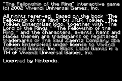
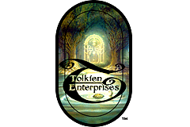

Lord of the Rings, The - The Fellowship of the Ring (Europe) (En,Fr,De,Es,It)
EEPROM 64K Save Format Mapped (Family Spec) 💾 MultiBoot
Cartridge Identity
- Game Code
ALOP(FamilyALO)- Header Title
UNIEUROLOTR- Maker / Revision
7D/ rev0- ROM Size
- 8.0 MiB (8,388,608 B)
- Save Media
EEPROM 64K- SHA-256
25e97aaec608b274e20da3e316ff7c249511e47a8ec8d3e022a792ed74d6bb20- Engine / SDK Group
comm-003(128 families)
Screenshots


Link Cable & Multiplayer Communications
This title contains detected communication capabilities: 💾 MultiBoot.
Detailed protocol specifications, SIO registers, Joybus commands, and MultiBoot sequences are documented in the Link & Multiplayer Reference.
- Single-Cart MultiBoot
- Single-Cartridge MultiBoot (Download Play) client/server handler · Thumb SWI 0x25 (
0xDF25):0x0ae344,0x13f866,0x1fdab0,0x4419a6
Battery Save Format Specification (Family Shared)
This release shares its save architecture with canonical family reference Lord of the Rings, The - The Fellowship of the Ring (USA) (Family
ALO).
Open Family Save Format Spec (ALOE)Download save-format.json
- Canonical Specification
ALOE· 4 mapped fields · 0 verified checksum(s) · Confidence: HIGH- gbakit Built-In Support
- Built-in (ALOE)
gbakit save verify ALOE save.sav
gbakit save decode ALOE save.sav
gbakit save fix ALOE damaged.sav -o repaired.savObserved Battery Save Layout
- Fill Byte & Active Size
0x00fill · 6–6 / 8,192 B active (entropy 2.58 bits/B)- Active Offset Ranges
0x2–0x7(1 total)- ASCII Magic / Headers
LoTR- Observed Variable Regions
- 0 bytes across 0 spans: None
- Candidate Checksum/Counter Spans
- None
Asset Map (formatkit.asset-map.v1)
Download ALOE-r1-58ef7f240d222226.asset-map.json.gz (106,414 B (103.9 KiB)) Verified PASS · 64.36% coverage
| Metric | Bytes / Value | Entries |
|---|---|---|
| Identified | 5,398,651 B (5.15 MiB) (64.36%) | 879 |
| Mapped | 0 B (0.00%) | 0 |
| Opaque | 0 B (0.00%) | 0 |
| Unknown | 2,989,957 B (2.85 MiB) (35.64%) | 846 |
| Total ROM Size | 8,388,608 B (8.00 MiB) | 1,725 |
| Coverage % | 64.36% | — |
| Entries w/ Code Refs | 896 / 1,725 (51.94%) | — |
Top Identified Formats: audio.m4a-wavedata (1 · 4,303,400 B (4.10 MiB)) · compress.bios-lz77 (41 · 1,011,595 B (987.9 KiB)) · gfx.gba-palette (835 · 82,400 B (80.5 KiB)) · audio.m4a-song-table (1 · 1,064 B (1.0 KiB)) · gba.rom-header (1 · 192 B)
Largest unknown Extents (Headerless / Custom Asset Candidates)
| Offset | Size | Shannon Entropy | Code Refs |
|---|---|---|---|
0x002A6C28 | 507,840 B (495.9 KiB) | 4.575 bits/B | 0 |
0x003BA320 | 172,552 B (168.5 KiB) | 2.051 bits/B | 0 |
0x00222020 | 171,016 B (167.0 KiB) | 4.812 bits/B | 0 |
0x0032D1F8 | 155,760 B (152.1 KiB) | 4.876 bits/B | 0 |
0x00370424 | 155,344 B (151.7 KiB) | 4.795 bits/B | 0 |
gzip -dk ALOE-r1-58ef7f240d222226.asset-map.json.gz && gbakit map verify rom.gba ALOE-r1-58ef7f240d222226.asset-map.json
gbakit assets export rom.gba --asset-map ALOE-r1-58ef7f240d222226.asset-map.json -o out/Text, Fonts & Scene Data
- Primary Text Encoding
- Plain ASCII (uncompressed) (
4,434ASCII strings ·1Shift-JIS runs) - Font & VWF Indicators
- VWF Width Table 1bpp Font · BIOS SWIs: BitUnPack
0x10:37· LZ770x11/12:349· Huffman0x13:10· RLE0x14/15:14 - Scene & Packaging
6ROM pointer tables (≥32 entries,3≥200) ·53relativeu32TOCs ·122OAM metasprite hits
Hardware MMIO Subsystems
dma_transfer0x8025be8ppu_display0x801b714